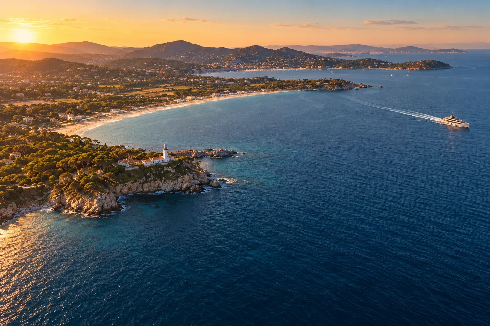
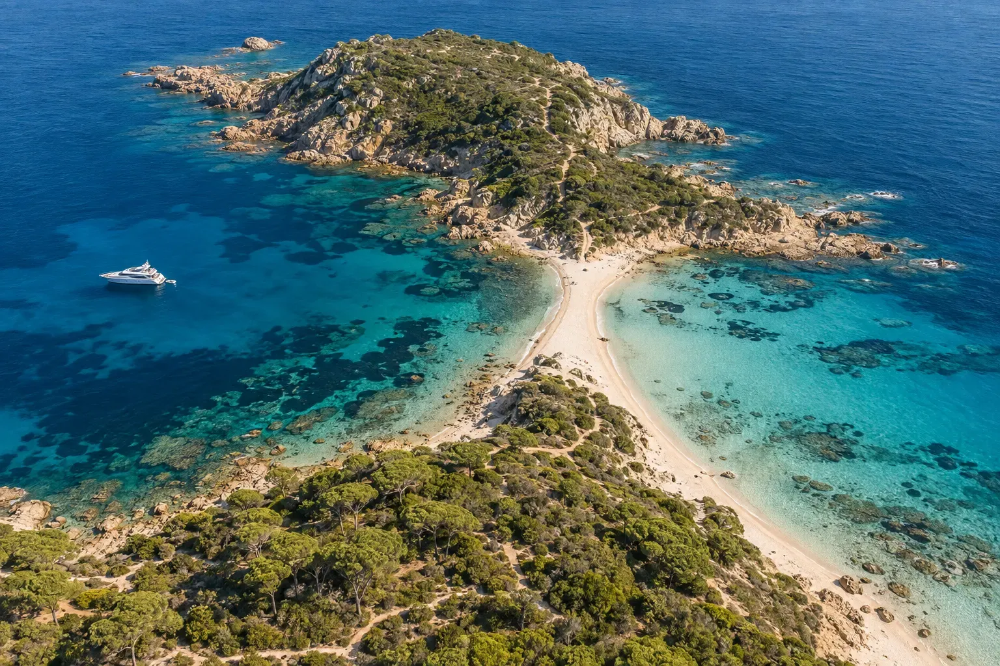
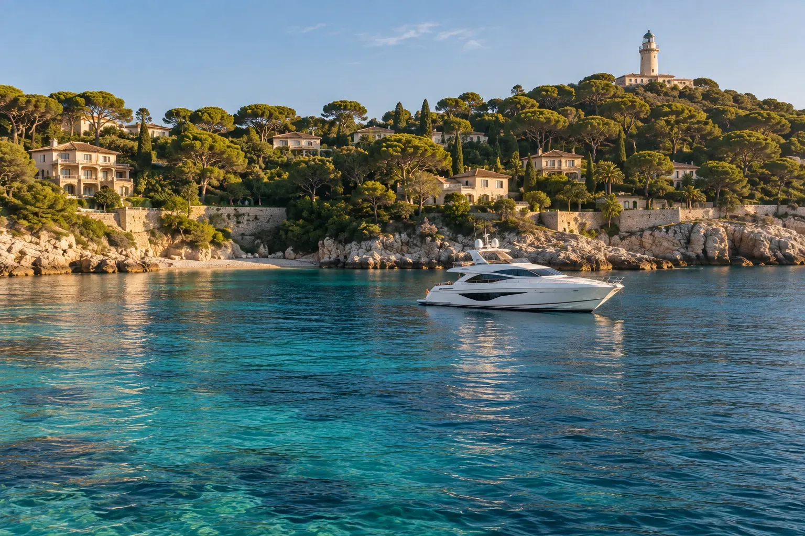
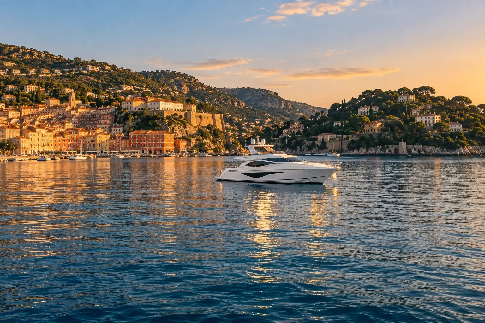

Ankerplätze und Kreuzfahrten an der Côte d'Azur
Unsere Reviere
Von den Goldenen Inseln bis Monaco, siebzig Seemeilen Küste, die unsere Kapitäne Bucht für Bucht kennen, je nach Wind und Jahreszeit.
- ausgewählte Ankerplätze
- 10
- Seemeilen Küste
- 70
- Büros, zwei Häfen
- 2
Einen guten Ankerplatz findet man nicht in einer App. Man wählt ihn morgens mit dem Kapitän, mit Blick darauf, woher der Wind weht.
Die Karte
Zehn Ankerplätze, die wir lieben
Von West nach Ost, von den Goldenen Inseln bis Monaco. Entfernungen in Seemeilen ab unserem Büro in Saint‑Tropez.
-

01Goldene Inseln
Porquerolles
Die Plage d'Argent und die Plage Notre‑Dame, Wasser wie in den Tropen, Pinien bis an den Sand. Hier verbringt man den Tag, und den Nachmittag mit dem Fahrrad auf der Insel.
- Ab Saint‑Tropez
- 32 Seemeilen
- Für
- Baden, Mittagessen an Bord, Radfahren
- Schutz
- Nördlich der Insel bei Ostwind
-

02Nationalpark
Port‑Cros
Die wildeste Insel der Küste, seit 1963 geschützt. Der Unterwasserpfad von La Palud, die Bucht von Port‑Man und eine Stille, die man nirgendwo sonst findet.
- Ab Saint‑Tropez
- 25 Seemeilen
- Für
- Schnorcheln, Wandern, Ruhe
- Schutz
- Geregeltes Ankern, im Sommer an Bojen
-

03Halbinsel von Saint‑Tropez
Cap Taillat
Eine Sandlandenge zwischen zwei Buchten, geschützt vom Conservatoire du littoral. Kein Gebäude am Horizont, nur der Küstenpfad und die Schirmpinien.
- Ab Saint‑Tropez
- 8 Seemeilen
- Für
- Wilde Bucht, Küstenpfad
- Schutz
- Eine Bucht auf jeder Seite, je nach Wind
-

04Ramatuelle
Pampelonne
Fünf Kilometer Sand zum offenen Meer. Der erste Ankerplatz der Woche, Mittagessen in einem Beach Club per Tender und der Sonnenuntergang vom Deck aus.
- Ab Saint‑Tropez
- 4 Seemeilen
- Für
- Beach Clubs, Abendessen an Bord
- Schutz
- Gut geschützt vor dem Mistral
-

05Unser Heimathafen
Saint‑Tropez
Der alte Hafen, der Quai Suffren und unser Büro. Man geht am Samstagnachmittag an Bord und kehrt am Freitagabend für ein letztes Abendessen mit Blick auf das Dorf zurück.
- Ab Saint‑Tropez
- Heimathafen
- Für
- Einschiffung, Dorf, Märkte
- Schutz
- Geschützter Hafen, Liegeplätze früh reservieren
-

06Agay und Anthéor
L'Estérel
Buchten aus rotem Porphyr, die in tiefblaues Wasser abfallen. Man ankert am Fuß der Felsen, badet von der Badeplattform, und das Abendlicht lässt das Massiv erglühen.
- Ab Saint‑Tropez
- 15 Seemeilen
- Für
- Buchten, Baden, Paddeln
- Schutz
- Buchten, geschützt vor Westwind
-

07Vor Cannes
Lérins-Inseln
Das Wasser zwischen Sainte‑Marguerite und Saint‑Honorat, türkis über Sandgrund. Die Mönche keltern dort noch ihren Wein, und Cannes ist nur zehn Tenderminuten entfernt.
- Ab Saint‑Tropez
- 27 Seemeilen
- Für
- Türkisfarbenes Wasser, Kloster, Cannes
- Schutz
- Der Kanal zwischen den beiden Inseln
-

08Antibes und Juan‑les‑Pins
Cap d'Antibes
La Garoupe mit ihren in den Pinien verborgenen Villen, und Port Vauban, wo die größten Yachten des Mittelmeers liegen. Am Abend das alte Antibes und seine Festungsmauern.
- Ab Saint‑Tropez
- 31 Seemeilen
- Für
- Anse de la Garoupe, Port Vauban
- Schutz
- Westseite bei Ostwind
-

09Zwischen Nizza und Cap Ferrat
Villefranche
Die tiefste Reede der Küste, zwischen den ockerfarbenen Fassaden des Dorfes und den Villen von Cap Ferrat. Ein Ankerplatz wie auf einer Postkarte, ruhig zu jeder Jahreszeit.
- Ab Saint‑Tropez
- 45 Seemeilen
- Für
- Geschützte Reede, Dorf, Cap Ferrat
- Schutz
- Ausgezeichneter Schutz, außer bei Südwind
-

10Port Hercule
Monaco
Unser zweites Büro, gegenüber dem Felsen. Ankunft zur blauen Stunde, Abendessen an Bord, wenn die Stadt erleuchtet, und der Grand Prix oder die Yacht Show vom Deck aus.
- Ab Saint‑Tropez
- 52 Seemeilen
- Für
- Port Hercule, Grand Prix, Yacht Show
- Schutz
- Hafen, auf Reservierung
Die Winde
Warum sich die Route jeden Morgen ändert
Drei Winde bestimmen das Wetter an dieser Küste. Der Kapitän liest sie im Morgengrauen und schlägt Ihnen dann den Ankerplatz des Tages vor.
Nordwest
Der Mistral
Er fegt kräftig und trocken das Rhônetal hinab und hinterlässt einen Himmel von seltener Klarheit. Der Kapitän sucht dann Ankerplätze östlich der Kaps: Pampelonne, die Buchten des Esterel, Villefranche.
Ost und Südost
Der Ostwind
Feuchter, er bringt eine lange Dünung. Man zieht sich westlich der Kaps und in tiefe Reeden zurück, oder bleibt einen Vormittag im Hafen, um das Dorf zu besuchen.
Am Nachmittag
Die Seebrise
An schönen Tagen erwärmt sich das Land, und nach dem Mittagessen weht der Wind vom Meer zur Küste. Es ist die Stunde der Segelyachten, und der Moment, den Ankerplatz für die Nacht zu wechseln.
Die Jahreszeiten
Wann segeln, wann kaufen
01
Mai und Juni
Wasser 18 bis 22 °C
Die Küste erwacht. Die Ankerplätze sind frei, das Licht ist lang, die Charterpreise sind die der Nebensaison.
02
Juli und August
Wasser 24 bis 26 °C
Die Hochsaison. Die besten Yachten werden schon im Winter gebucht, die Häfen sind voll: Ein Makler, der die Kapitäne kennt, macht den Unterschied.
03
September und Oktober
Wasser 20 bis 23 °C
Unsere Lieblingssaison. Das Meer ist noch warm, die Menschenmengen sind fort, und Monaco empfängt die Yacht Show.
04
November bis April
Das Winterlager
Die Yachten gehen in die Werften. Die beste Zeit zum Kaufen: in Ruhe besichtigen, an Land begutachten, ohne den Druck des Sommers verhandeln.
Ankern ohne Schaden
Die Seegraswiesen der Posidonia
Diese Unterwasserwiesen bieten Fischen Schutz, klären das Wasser und halten den Sand der Strände. Ein Yachtanker kann Quadratmeter davon herausreißen, und sie wachsen nur wenige Zentimeter pro Jahr nach.
Seit 2019 dürfen Schiffe über vierundzwanzig Meter in den französischen Mittelmeergewässern nicht mehr in Seegraswiesen ankern. Unsere Kapitäne kennen die Sandflächen und die zugelassenen Bojen: Sie genießen die Bucht, und sie bleibt unberührt.
- Über 24 m
- Ankerverbot in den Seegraswiesen
- 1 bis 6 cm
- Das Wachstum einer Seegraswiese in einem Jahr
- Port‑Cros
- Nationalpark seit 1963
Ihre Woche
Planen wir gemeinsam Ihre Route
Nennen Sie uns Ihre Daten und Wünsche: Ein Makler schlägt Ihnen eine Yacht und eine erste Route vor, die der Kapitän jeden Morgen anpasst.